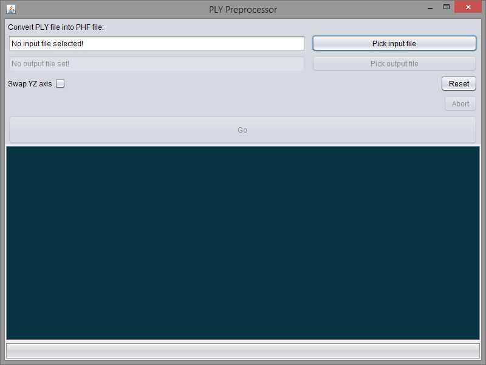
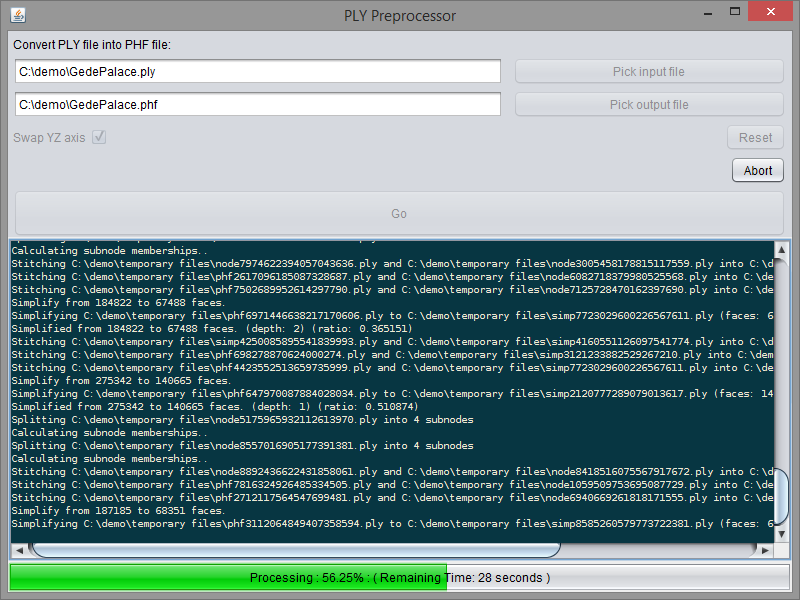

The Preprocessor and its source code is available for download on this page. This page also details the recommended system requirements, and usage of the software.
Recommended System
| Component | Recommendation |
| CPU | Intel i5 CPU or better |
| RAM | 4 to 8 GB |
| Storage | Due to the number of temporary files generated during preprocessing, we recommend about 5 times the size of the model in free space on the hard drive. For example, processing a 1 GB model requires around 5 GB of free space. We also recommend using a fast storage mechanism such as a 7200rpm harddrive or Solid State Drive but this is not necessary for the operation of this software. |
| Operating System | The software has been tested on both Windows 8.1 64-bit and Ubuntu 12.10 64-bit operating systems. |
| JRE | This software requires a 64-bit Java Runtime Environment of version 1.7 or later. |
Downloads
Installation
- Download the zip file containing the executables above.
- Unzip the folder into a target directory.
- Do not modify the folder structure or move the PLYPreprocessor.jar file.
Usage
- Run the PLYPreprocessor.jar file by double clicking on it.
- Use the Pick input file button to choose the input model.
- Use the Pick output file button to choose the output file.
- If the model was recorded in a Z-up orientation, tick the Swap YZ axis box to convert the model into the coordinate space used by the Renderer.
- Click the Go button to begin processing.
- Watch for any errors in the console box.
- All temporary files are stored in a temporary directory in the same folder as the chosen output file.
- The Reset button can be used to clear the fields, output box, and progress bar.
- The Abort button can be used to stop the preprocessing if it is taking too long. This may require manual removal of temporary files.
Screenshots

Figure 1: The main window of the Preprocessor.

Figure 2: The main window of the Preprocessor while processing a 68 MB model.